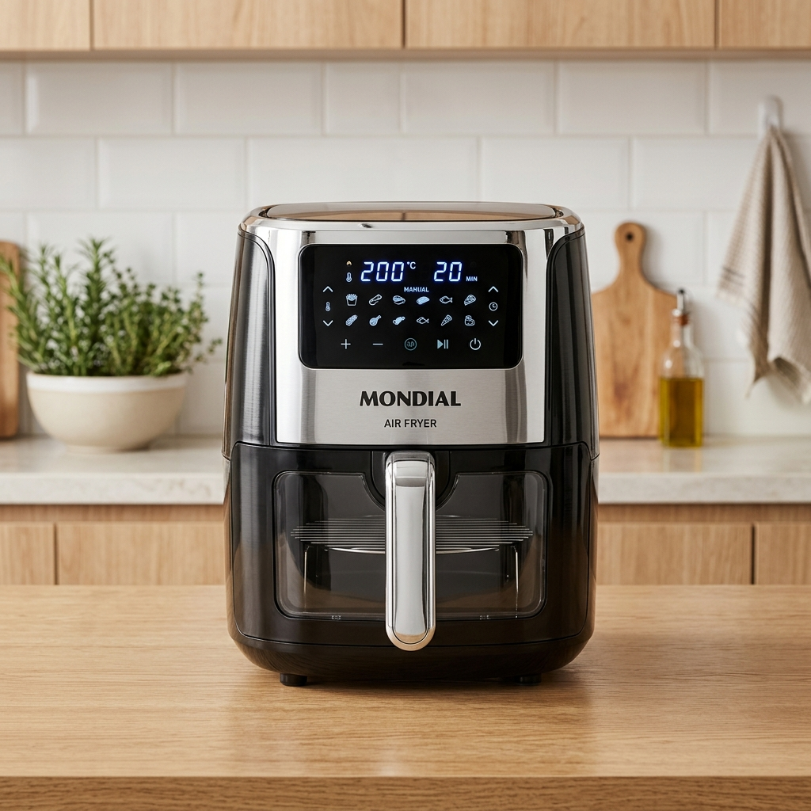

Air Fryer parou de esquentar, mas a luz acende? Descubra o problema mais comum
Você preparou os alimentos, colocou na cesta, ligou o timer e nada aconteceu? Se a sua Air Fryer acende a luz (ou até gira o ventilador), mas o ar continua gelado, você não está sozinho. Esse é o problema número 1 relatado por donos de marcas como Mondial, Philco e Britania.
A boa notícia é que, na maioria das vezes, o reparo é simples e custa menos de R$ 10,00. Entenda agora o que pode estar acontecendo.
⚠️ IMPORTANTE: Segurança em primeiro lugar!
Nunca abra sua Air Fryer ligada na tomada. O risco de choque elétrico é real. Se não tiver confiança, procure um técnico.
1. O Vilão das Air Fryers: O Fusível Térmico
O fusível térmico é um componente de segurança que "abre" (queima) para proteger o motor e a resistência caso o aparelho atinja uma temperatura perigosa. Se você usa sua Air Fryer por muito tempo seguido ou se a ventilação traseira está obstruída, o fusível vai atuar.
Se o fusível queimar, a energia para a resistência é cortada, mas as luzes e o timer continuam funcionando porque estão em circuitos diferentes.
Seu aparelho já tem mais de 2 anos?
Às vezes, trocar o fusível é apenas um "remendo". Veja se não vale mais a pena investir em uma máquina nova com garantia:
2. Como testar o fusível?
Para testar, você precisará de um multímetro na escala de continuidade (aquele que faz "bipe").
- Abra a parte superior da Air Fryer (geralmente presa por parafusos ocultos embaixo dos pezinhos ou na tampa).
- Localize o fusível térmico (fica encapado por um tubo de fibra perto da resistência).
- Coloque as pontas do multímetro em cada lado do fusível.
- Se NÃO apitar, o fusível está queimado e precisa ser trocado.
3. O Teflon está descascando também?
Muitos usuários percebem o problema elétrico junto com o desgaste do teflon. Comer com teflon descascando pode ser prejudicial à saúde.
Dica de Mestre: Se a sua cesta já está "feirando" e agora o fusível queimou, o custo do reparo (peças + frete + tempo) pode chegar a 40% do valor de uma nova. Considere o upgrade abaixo:

Mondial Family 4L - A Favorita do Brasil
Resistência de alta durabilidade e teflon reforçado. A escolha segura para quem quer fugir de manutenção chata.
⚡ VER MELHOR PREÇO AGORAConclusão
Seja trocando o fusível térmico ou resolvendo o problema de vez com uma máquina nova, o importante é voltar a ter a praticidade da Air Fryer no seu dia a dia.
Gostou do tutorial? Compartilhe com quem também está com a "fritadeira gelada" em casa!